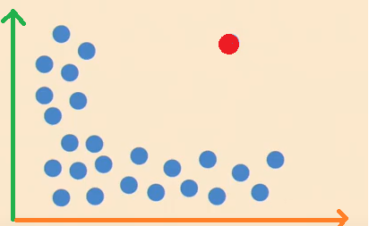
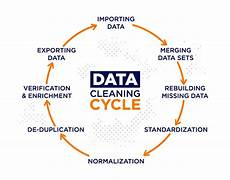

Data Cleaning
Data Cleaning

Data Wrangling y calidad de datos
El Data Wrangling (o disputa de datos) es el proceso iterativo de transformar, limpiar y estructurar datos brutos y desordenados en un formato óptimo para su posterior análisis o modelado. Su relación con la calidad de datos es simbiótica y fundamental: no se puede lograr una alta calidad sin un wrangling riguroso, y el wrangling carece de propósito si no busca elevar la precisión, consistencia, integridad y relevancia de la información. En un entorno donde las decisiones estratégicas dependen de los algoritmos, el Data Wrangling actúa como el filtro esencial que corrige valores nulos, elimina duplicados y estandariza formatos, asegurando que los datos de entrada sean confiables para evitar el clásico error de "basura entra, basura sale".

Manejo de valores nulos y outliers
El manejo de valores nulos (ausentes) y outliers (atípicos) es un paso crítico en la limpieza de datos, ya que ambos pueden distorsionar los análisis y sesgar los modelos de Machine Learning. Los nulos completan la información faltante para no perder registros, mientras que los outliers controlan las anomalías para que no deformen la realidad de los datos.

Pipelines ETL/ELT
Diseño y automatización de procesos para extraer, transformar y cargar datos desde múltiples fuentes hacia sistemas analíticos o bases de datos, garantizando calidad, consistencia y disponibilidad de la información.

ingeniería-de-características
La ingeniería de características es el proceso de crear características de modelos predictivos. Turing propuso la idea de una máquina capaz de ejecutar cualquier proceso lógico. Su modelo teórico marcó el inicio del pensamiento algorítmico que haría posible la IA.
“Podemos considerar que el razonamiento es una forma de cálculo.” — Leibniz